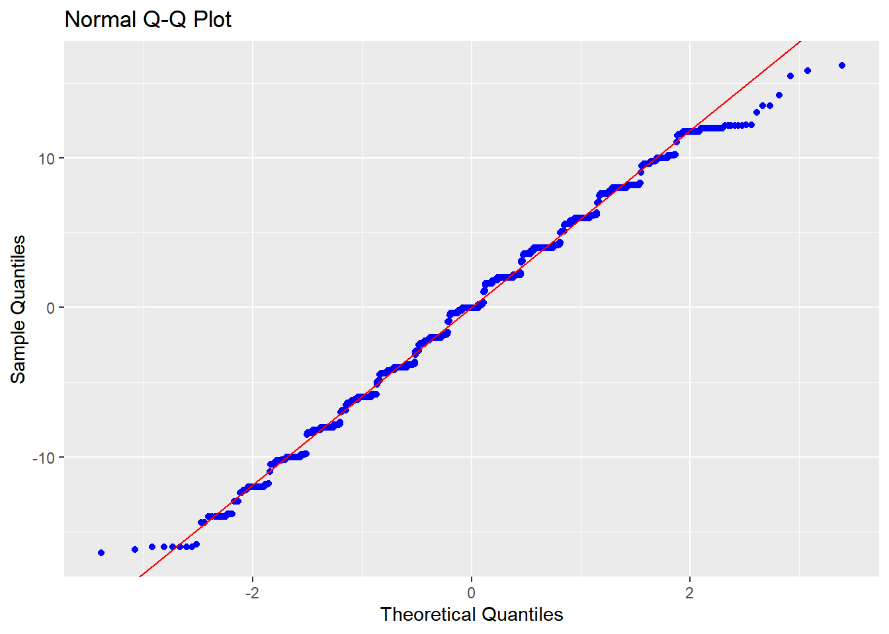
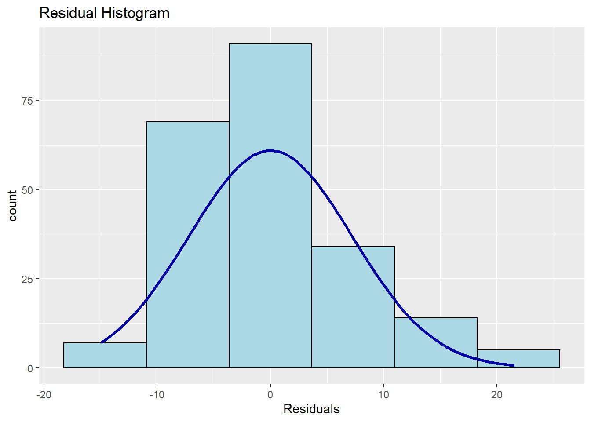
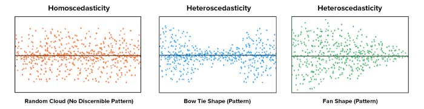

Capítulo 11 Regressão linear simples
Os modelos de regressão são modelos estatísticos que visam predizer o comportamento de uma variável resposta (Y) como uma função de uma ou mais variáveis independentes (X). Em larga escala, eles substituem os outros testes paramétricos vistos até agora. Assim, quase tudo o que foi visto durante os capítulos anteriores são casos especiais de modelos de regressão.
Existem diferentes nomenclaturas utilizadas para classificar tais modelos e a tabela abaixo apresenta uma classificação funcional.
| VI e VD | VD Discreta | VD Contínua |
|---|---|---|
| VI Discreta | Reg. logística | Reg. linear (Teste T/ANOVA) |
| VI Contínua | Reg. logística | Reg. linear |
Algumas conclusões são possíveis:
1. A variável dependente irá definir se a regressão será linear ou logística. Quando linear, a VD é continua (peso, tempo de resposta, inteligência); quando logística, a VD é discreta (acidente fatal - sim ou não; orientação política - direita ou esquerda).
2. Caso haja uma única VI, dá-se o nome de regressão simples. Quando há duas ou mais VIs, dá-se o nome de regressão múltipla.
3. Se houver mais de uma VD, o modelo será chamado de multivariado (em inglês, path analysis).
4. Teste T e ANOVA são casos de regressão linear simples
5. ANCOVA, ANOVA de k vias e ANOVA fatorial são casos de regressão múltipla
6. O qui-quadrado pode ser aproximado pela regressão logística simples e vice-versa
Isso posto, é possível definir a Regressão linear como uma técnica estatística que modela o relacionamento funcional entre duas variáveis, por uma equação que permite estimar o quanto os valores de uma variável variam em função de outra. Há, ao menos, duas utilidades diretas em uma pesquisa, que são:
- Predizer os valores da variável dependente (Y) em função dos valores da variável dependente (X);
- Explicar a variabilidade da variável dependente (Y) em função da variável independente (X).
Abas as utilidades são virtualmente iguais e como a Regressão linear simples pode ser vista a partir de um incremento ou avanço dos modelos de correlação, os aspectos correlacionais devem (e podem) ser inicialmente investigados.
É possível estudar tais modelos tanto de uma maneira operacional, com foco totalmente pragmático e aderente às recomendações tradicionais dos livros de estatística, ou de uma forma detalhada, em que ao estudar os modelos de regressão, quase que muitos conceitos da estatística inferencial e estatística matemática são revisitados.
Nesse capítulo, o foco será dado na capacidade operacional.
Conceitualmente, a regressão linear é apresentada como::
\[y_i = b_0 + b_1X{_1}_i + \epsilon_{i}\]
\(y_i\) representa a variável dependente
\(b_0\) é o intercepto (coeficiente linear)
\(b_1\) é a inclinação (coeficiente angular)
\(\epsilon_{i}\) é o erro/resíduo
Os seguintes pressupostos devem ser avaliados:
- A relação entre as variáveis é linear
- Os resíduos são independentes
- Os resíduos são normalmente distribuídos
- A variância dos resíduos é constante
O mnemônico LINE (linearity, independence, normality, equal variance) talvez ajude a lembrar destes pressupostos.
11.1 Legenda
Diferentes termos são empregados em modelos de regressão A legenda a seguir visa auxiliar no entendimento de cada um deles e aproximar o leitor aos principais conceitos amplos utilizados em modelos lineares:
intercepto - \(b_0\): Valor previsto de Y quando X = 0
Inclinação - \(b_i\): A diferença média em unidades da variável dependente quando se altera uma unidade de X.
SSR: Soma dos Quadrados da Regressão
SSE: Soma dos Quadrados dos Erros
SST: Soma dos Quadrados Total
\(R^2\) ou Coeficiente de Determinação: A porcentagem de variação da variável dependente (Y) que pode ser atribuída à variabilida da(s) variável (is) independente(s) (X)
\(R^2_{adj}\) ou Coeficiente de Determinação ajustado: Coeficiente que pondera a \(R^2\) pelo número de variáveis explicativas e pelo número de observações da amostra. É particularmente útil quando deseja-se comparar modelos de regressão múltipla que prevêem a mesma variável dependente, pois penaliza aquele modelo com maior número de variáveis independentes.
RMSEA (\(Res. St. Error\)): Desvio padrão dos valores previstos da variável dependente ao redor da linha de regressão estimada
O conhecimento das fórmulas fechadas também auxilia no entendimento da modelagem.
Soma dos Quadrados da Regressão: \(SSR = \sum_{i=1}^{n}(\hat{y} - \bar{y})^2\)
Soma dos Quadrados dos Erros: \(SSE = \sum_{i=1}^{n}(y_i - \hat{y})^2\)
Soma dos Quadrados Total: \(SST = \sum_{i=1}^{n}(y_i - \bar{y})^2\)
Variabilidade total: \(SST = SSR + SSE\)
\(R^2\): \(\frac{SSR}{SST} = 1- \frac{SSE}{SST}\)
Erro quadrático médio: \(MSE = \sum_{i=1}^{n}(y_i - \hat{y})^2 /(N-K)\)
\(R^2_{adj}\): \(1-\frac{MSE}{MSR}\)
\(Res. St. Error = \sqrt\frac{SSE}{N-K}\):
É possível citar ao menos três formas de explicar modelos de regressão. Evidentemente, todas são interligadas, mas cada qual apresenta uma ênfase didática diferente. Nesse sentido, a forma mais “conceitual” conta com conjuntos para explicitar o tema, a forma “correlacional” parte de um gráfico de dispersão e a forma “analítica” traz conceitos matemático.
11.2 Explicação conceitual
Inicialmente, é necessário atentar que a variável dependente (Y) e a variável independente (X) podem ser vistas como conjuntos. No caso:

Neste exemplo, ambas as variáveis estão afastadas e não há nenhuma relação entre elas. No entanto, o que frequentemente ocorre é que existe algum grau de relacionamento entre elas, tal como exposto abaixo:

Caso se assuma que X é um fator de causalidade à realização de Y, isso significa que uma parte da realização de Y, necessariamente, depende de X. Essa área de interseção é entendida como a parte de Y que pode ser atribuída ou explicada por X. Analiticamente, essa área precisa de algumas transformações algébricas e, em função delas, recebe o nome de Soma dos Quadrados da Regressão (SSR, em inglês).

No entanto, nem toda a variabilidade de Y pode ser atribuída à X. Essa região também sofrerá transformações algébricas e receberá o nome de Soma dos Quadrados dos Erros (SSE, em inglês). Essa área representa a variabilidade de Y que não pode ser atribuída/explicada por X. Nesse caso:

É também possível verificar que Y possui uma variabilidade total, que também pode ser vista como o somatório da área explicada pela regressão (SSR) com a área não explicada (SSE). Essa região total também passará por transformações algébricas e é chamada de Soma dos Quadrados Total (SST, em inglês).

Vendo todas as partições de uma única vez, temos o seguinte:

Com isso, torna-se claro que a porcentagem de variação de Y que pode ser atribuída à variabilidade de X é uma razão entre a Soma dos Quadrados da Regressão (SSR) pela Soma dos Quadrados Total (SST). O coeficiente obtido por essa razão recebe o nome de Coeficiente de Determinação ou \(R^2\).

Isso é equivalente a subtração do espaço máximo de variabilidade (100%) pela razão entre a Soma dos Quadrados dos Erros (SSE) pela Soma dos Quadrados Total (SST):

11.3 Pesquisa
Base: Livro - Dados - Eating disorders
Vamos utilizar a pesquisa intitulada “Aspects Related to Body Image and Eating Behaviors in Healthy Brazilian Undergraduate Students”, publicada em 2018 no Global Journal of Educational Studies, que sou co-autor.
O objetivo dessa pesquisa foi explorar os fatores envolvidos em transtornos alimentares e aspectos da percepção da imagem corporal, bem como verificar a capacidade que uma medida possuia em predizer os resultados de outra. Esse artigo contou com a utilização de escalas aplicadas em 219 participantes no Brasil. Para acessar aspectos relacionados aos Transtornos alimentares, a escala EAT-26 foi aplicada. Para verificar aspectos da imagem corporal, a escala BSQ-34 foi aplicada.
Segue abaixo uma tabela inicial com dados descritivos dos resultados.
dados_brasil %>%
select(sexo,eat_soma, bsq_soma, imc, faz_esporte, familia_esporte) %>%
psych::describeBy(.,group = "sexo") %>% pander::pander()## Warning in pander.default(.): No pander.method for "psych", reverting to
## default.No pander.method for "describeBy", reverting to default.1:
Table continues below vars n mean sd median trimmed mad sexo 1 126 1 0 1 1 0 eat_soma 2 126 18.48 10.09 17 17.9 11.86 bsq_soma 3 126 94.17 34.87 91 92.64 40.77 imc 4 124 22.58 3.151 21.95 22.24 2.542 faz_esporte 5 126 0.4524 0.4997 0 0.4412 0 familia_esporte 6 126 0.4762 0.5014 0 0.4706 0 min max range skew kurtosis se sexo 1 1 0 NA NA 0 eat_soma 0 47 47 0.4929 -0.5091 0.8988 bsq_soma 32 182 150 0.3512 -0.4573 3.107 imc 16.85 32.87 16.02 0.9764 0.8725 0.2829 faz_esporte 0 1 1 0.1891 -1.98 0.04452 familia_esporte 0 1 1 0.09421 -2.007 0.04467 2:
Table continues below vars n mean sd median trimmed mad sexo 1 93 2 0 2 2 0 eat_soma 2 93 12.65 8.189 11 11.55 5.93 bsq_soma 3 93 64.24 32.87 55 59.32 19.27 imc 4 90 24.1 3.99 23.41 23.65 2.829 faz_esporte 5 93 0.3978 0.4921 0 0.3733 0 familia_esporte 6 92 0.4783 0.5023 0 0.473 0 min max range skew kurtosis se sexo 2 2 0 NA NA 0 eat_soma 1 50 49 1.688 4.262 0.8491 bsq_soma 0 188 188 1.504 2.799 3.408 imc 17.56 39.21 21.66 1.269 2.073 0.4206 faz_esporte 0 1 1 0.4107 -1.851 0.05103 familia_esporte 0 1 1 0.08562 -2.014 0.05236
11.4 Execução no R
Inicialmente, o gráfico de dispersão auxilia na visualização da relação entre as variáveis.A correlação entre ambas as medidas expressa a força e a direção que elas possuem. Enquanto a força é interpretada em fraca (0.1), moderada (0.3) ou forte (0.5) (Cohen, 1988), a direção pode ser positiva ou negativa, a depender do sinal.
ggplot(dados_brasil, aes(x = bsq_soma, y = eat_soma)) +
geom_jitter() +
labs(x = "Resultados da Escala BSQ-34", y = "Resultados da Escala EAT-26",
title = "Correlação entre o BSQ-34 e o EAT-26")
O gráfico deixa claro que existe um padrão linear entre ambas as variáveis. O coeficiente de correlação pode ser calculado pelo Produto momento de Pearson, com resultado de 0.6754262, indicando uma alta correlação entre ambos os resultados.
Com isso, é natural que o interesse seja verificar o quanto os resultados do EAT-26 variam em função do BSQ-34, uma vez que alguns achados da literatura comentam que a alterações da alimentação ocorrem em função da percepção da imagem corporal. Dando a este objetivo uma leitura estatística, o interesse é o de prever os valores do EAT-26 a partir dos valores do BSQ-34 ou o quanto a variabilidade dos resultados do EAT-26 pode ser atribuída pelos resultados do BSQ-34.
Fazer isso pede que se retorne ao gráfico correlacional feito ainda pouco e que tente se ajustar / traçar uma reta que tente tocar na maioria dos pontos. Milhões de retas podem ser traçadas e todas acertarão alguns pontos, mas errarão outros. Por exemplo:
ggplot(dados_brasil, aes(x = bsq_soma, y = eat_soma)) +
geom_jitter() +
labs(x = "Resultados da Escala BSQ-34", y = "Resultados da Escala EAT-26",
title = "Correlação entre o BSQ-34 e o EAT-26") +
xlim(10,200) +
geom_abline(slope = c(rnorm(10,0.4,0.6), rnorm(10,0.2,0.2)),color = 1:20)## Warning: Removed 2 rows containing missing values (geom_point).
A necessidade agora é conseguir encontrar o melhor modelo estatístico que descreva essa relação. Assim, obter uma função que possa gerar uma reta que esteja bem perto dos pontos reais e, consequentemente, minimize os erros. Isso é feito justamente resgatando o conceito de função afim, exposto no ensino médio (e ilustrado ao início do capítulo):
\[\hat{y} = a + bX\]
Repare que agora o valor previsto (\(\hat{y}\)) depende de duas constantes (a: intercepto ou coeficiente linear e b: inclinação ou coeficiente angular) e uma variável (X). Apenas por uma questão de simbologia, três alterações são feitas com a equação:
Os símbolos são alterados. Agora \(a = b_0\) e \(b = b_1\). A alteração de simbologia não altera em nada os cálculos.
Como se sabe que essa reta vai estimar os valores reais de \(Y\), letras minúsculas ou um chapéu sobre as letras será utilizado em vez das letras maiúsculas ou gregas.
Para que cada valor estimado seja associado a um participante a letra \(i\) será adicionada abaixo do \(y\) e do \(b_1\).
Assim, temos que os valores estimados de y, agora \(\hat{y}\), são obtidos pelo \(b_0\) e \(b_1\):
\[\hat{y}_i = b_0 + b_1X{_1}_i\]
A equação visa minimizar os erros e não anulá-los. Oy seja, entre o valor real de y (os pontos que estão no gráfico) e os valores obtidos minha equação, haverá sempre uma certa quantidade de erro de estimativa (\(e_i\)). Qualquer que seja o valor estimado de cada participante (\(i\)), sempre haverá uma quantidade de erro (\(e_i\)). Dessa forma, é possível descrever que os valores reais possuem uma porção de erro:
\[y_i = a + b_1X{_1}_i+\underbrace{e_i}_\text{aleatório}\]
uma vez que é possível traçar milhões de retas, para encontrar a reta que minimize os erros será necessário discriciona-lo.
\[e_i = y_i - \hat{y_i}\] \[e_i = y_i - (b_0 + b_1X{_1}_i) \\ = y_i - b_0 - b_1X{_1}_i\]
O método mais frequentemente utilizado para minimizar os erros é o Mínimos Quadrados Ordinários (em inglês, Ordinary Least Squares – OLS). Isso é realizado minimizando a soma dos quadrados das diferenças entre os valores estimados de Y por meio da reta de regressão (\(\hat{Y}\)). Para isso, o procedimento consiste em derivar a soma dos quadrados dos erros em relação a \(b_0\) e e \(b_1\) e, em seguida, igualando a 0:
\[\frac{\partial \epsilon}{\partial b_0} = 0,\\ \frac{\partial \epsilon}{\partial b_1} = 0\]
Com isso, os resultados permitem concluir que a inclinação da reta (slope) é dada por:
\[\begin{aligned} b_1 &= \frac{\sum_{i = 1}^{n} x_i y_i - \frac{(\sum_{i = 1}^{n} x_i)(\sum_{i = 1}^{n} y_i)}{n}}{\sum_{i = 1}^{n} x_i^2 - \frac{(\sum_{i = 1}^{n} x_i)^2}{n}} = \frac{COV(xy)}{VAR(x)}\end{aligned}\]
Enquanto o intercepto é dado por:
\[\begin{aligned}b_0 &= \bar{y} - b_1 \bar{x} \end{aligned}\]
Agora é possível traçar a melhor reta para descrever o relacionamento entre as variáveis, tal como abaixo:
b1 <- cov(dados_brasil$bsq_soma, dados_brasil$eat_soma)/var(dados_brasil$bsq_soma)
b0 <- mean(dados_brasil$eat_soma)-(b1*mean(dados_brasil$bsq_soma))
ggplot(dados_brasil, aes(x = bsq_soma, y = eat_soma)) +
geom_jitter() +
labs(x = "Resultados da Escala BSQ-34", y = "Resultados da Escala EAT-26",
title = "Correlação entre o BSQ-34 e o EAT-26") +
geom_abline(intercept = b0, slope = b1)
Essa reta passará necessariamente pela média de ambas as variáveis.
ggplot(dados_brasil, aes(x = bsq_soma, y = eat_soma)) +
geom_jitter() +
labs(x = "Resultados da Escala BSQ-34", y = "Resultados da Escala EAT-26",
title = "Correlação entre o BSQ-34 e o EAT-26") +
geom_abline(intercept = b0, slope = b1) +
geom_vline(xintercept = mean(dados_brasil$bsq_soma), size=1.5, color = "red", linetype = "dashed") +
geom_hline(yintercept = mean(dados_brasil$eat_soma), size=1.5, color = "red", linetype = "dashed")
Aproveitando o gráfico, agora é possível apresentar os dados reais, a linha de regressão e as distâncias (resíduos) entre os pontos reais e os previstos. Enquanto o modelo foi preciso em alguns pontos, em outros ele não se saiu assim tão bem. No entanto, como essa reta foi construída pela minimização da soma dos quadrados dos resíduos, isso nos deixa confortável com os resultados.
transform(dados_brasil, Fitted = fitted(mod_linear_simples)) %>%
ggplot(., aes(y = bsq_soma, x = eat_soma)) +
geom_point(aes(y = bsq_soma, x = eat_soma, shape = "real"), color="black") + #plot real
geom_point(aes(y = Fitted, shape = "previsto"), color="1") + #plot previsto
geom_smooth(se=FALSE, method = "lm", color = "black") +
geom_segment(aes(x = eat_soma, y = bsq_soma, xend = eat_soma, yend = Fitted), color= "red") + #erro ligado
scale_colour_manual(name = "Legenda",
labels = c("Estimados/Previstos", "Reais dos dados"),
values = c("green", "black")) +
scale_shape_manual(name = "Legenda",
labels = c("Estimados/Previstos", "Reais dos dados"),
values = c(1, 5)) +
labs(x = "Escala BSQ-34", y = "Escala EAT-26", title = "Resultados previstos vs. reais")## `geom_smooth()` using formula 'y ~ x'
Posto isso, agora vamos, computacionalmente e analiticamente, realizar passo a passo a regressão linear simples. A função lm é a nativa para isso. Ela precisa da variável dependente e da variável independente, tal como abaixo. É importante sempre atentar para o nível de medida das variáveis para que os resultados sejam adequados.
Existem diferentes maneiras de apresentar o resultado. Tipicamente, uma tabela que apresenta características gerais seguida por específicas é o mais vantajoso. Assim:
## Model Summary
## --------------------------------------------------------------
## R 0.675 RMSE 7.209
## R-Squared 0.456 Coef. Var 45.196
## Adj. R-Squared 0.454 MSE 51.966
## Pred R-Squared 0.445 MAE 5.565
## --------------------------------------------------------------
## RMSE: Root Mean Square Error
## MSE: Mean Square Error
## MAE: Mean Absolute Error
##
## ANOVA
## -----------------------------------------------------------------------
## Sum of
## Squares DF Mean Square F Sig.
## -----------------------------------------------------------------------
## Regression 9503.775 1 9503.775 182.883 0.0000
## Residual 11328.675 218 51.966
## Total 20832.450 219
## -----------------------------------------------------------------------
##
## Parameter Estimates
## --------------------------------------------------------------------------------------
## model Beta Std. Error Std. Beta t Sig lower upper
## --------------------------------------------------------------------------------------
## (Intercept) 1.466 1.176 1.246 0.214 -0.852 3.784
## bsq_soma 0.178 0.013 0.675 13.523 0.000 0.152 0.204
## --------------------------------------------------------------------------------------Os resultados do intercepto (\(b_0\)) e da inclinação \(b_1\) já foram analisados anteriormente, mas agora há 3 outros resultados que serão descritos. Em primeiro momento, é necessário verificar o ajuste do modelo e isso é feito na seção ANOVA. Esse resultado compara o modelo em questão contra um modelo em que apenas o intercepto é utilizado para prever todos os valores. Tecnicamente, o modelo em questão é chamado de irrestrito (ou Aumentado) e o modelo que tem apenas o intercepto é chamado de restrito ou nulo. Valores significativos são necessários nesta etapa.
O segundo momento se relaciona à interpretação do \(R^2\). Essa medida mensura o quanto a variação total da variável dependente (Y) pode ser atribuída às variáveis independentes do modelo (X). Repare que ele é computado pela razão entre o SSR e o SST e indica que cerca de 46% dos resultados do EAT-26 podem ser explicados pelo modelo.
O terceiro momento é a análise do \(R^2 ajustado\). Em modelos de regressão, modelos com mais parâmetros/preditores sempre vão sempre ter \(R^2\) maior do que modelos mais compactos, independente da relevância destes parâmetros extras. O \(R^2 ajustado\) é uma medida que considera a complexidade do modelo. Neste modelo, há dois preditores \(b_0\) e \(b_1\), gerando:
\[Adjusted R^2 = 1 - \frac{SSE/(N-K)}{SST/(N-1)} = 1-\frac{11328.675/(220-2)}{20832.45/(220-1)} = 1-\frac{51.97}{95.13} = 0.454\] Isso posto, a tabela inicial da regressão abaixo é exatamente igual a que foi exposta no capítulo sobre a ANOVA (de uma via) e é muito encontrada em outros livros técnicos:
| Source | SS | df | MS | F-Value | P-Value |
|---|---|---|---|---|---|
| Regressão | SSR (Regressão) | K-1 | MSR | SSR/K-1 | MSR/MSE |
| Erro | SSE (Erro) | N-K | MSE | SSE/N-K | – |
| Total | SST (Total) | N-1 | – | – | – |
Com tais resultados descritos, agora é possível retornar aos coeficientes obtidos na regressão.
O intercepto é chamado de constante na maior parte dos programas. Ele se refere ao valor médio (esperado) de Y quando X=0. Ou seja, se alguém tivesse tirado o valor 0 na escala BSQ-34, o valor previsto para os resultados da Escala EAT-26 seria de 1.55, tal como apresentado abaixo:
## 1
## 1.465899É importante notar que frequentemente o intercepto não tem interpretação lógica e, por isso, costuma ser desconsiderado. No entanto, é possível centralizar os valores do preditor \((x_i-\bar{x})\) para que o intercepto se torne o valor médio da variável dependente e tenha melhor capacidade de interpretação. É também importante atentar que o valor do intercepto não é significativo, indicando que ele não é significativamente diferente de 0.
Já o coeficiente do bsq_soma se refere os resultados obtidos a partir da Escala BSQ-34 é 0.178 e significativo. Isso significa que 1 unidade de mudança nos resultados da BSQ-34 geram 0.177 unidade de mudança, em média, nos resultados da Escala EAT-26. A significância deste coeficiente é dada pelo Erro Padrão (Std. Error) e segue uma T com n-2 graus de liberdade.
Uma vez que o modelo já foi realizado, a interpretação dos resultados depende da adequação de seus pressupostos. Estes testes são os mesmos realizados em outros modelos e podem ser feitos tanto de forma gráfica, como de maneira formal. O relacionamento linear já havia sido investigado no gráfico de dispersão ao início deste capítulo. A Normalidade dos resíduos pode ser vista pelo QQ-Plot (abaixo):
 Caso os pontos e a reta diagonal estejam superpostos, se considera que este pressuposto foi atendido. Testes estatísticos formais também podem ser utilizados. Apesar dos resultados obtidos por tais testes serem algo discordantes, os achados sugerem violação deste pressuposto.
## Warning in ks.test(y, "pnorm", mean(y), sd(y)): ties should not be present for
## the Kolmogorov-Smirnov test## -----------------------------------------------
## Test Statistic pvalue
## -----------------------------------------------
## Shapiro-Wilk 0.9597 0.0000
## Kolmogorov-Smirnov 0.0816 0.1072
## Cramer-von Mises 17.066 0.0000
## Anderson-Darling 2.4137 0.0000
## -----------------------------------------------A independência dos resíduos depende bastante do delineamento utilizado e transversal ou longitudinal. O teste de Durbin Watson pode ser utilizado e a Hipótees nula é de que os resíduos não são correlacionados. Este pressuposto foi atendido, o que já era esperado.
## lag Autocorrelation D-W Statistic p-value
## 1 0.07254389 1.845067 0.256
## Alternative hypothesis: rho != 0As homocedasticidade, ou seja, variâncias constantes pode ser vista em um gráfico de dispersão dos resíduos (residual) contra os valores previstos (fitted).

Caso haja padrões neste gráfico, isso sugere que este pressuposto foi violado. A visualização costuma ser um pouco complicada e abaixo há três exemplos:

Existem também testes formais, como o Bartlett e o Breusch-Pagan. Os resultados costumam convergir e, em função da praticidade computacional, o teste de Breusch-Pagan será utilizado. Nesse teste, os resultados tem distribuição qui-quadrado e a Hipótese nula assume homocedasticidade. Portanto, a estatística de teste deveria ser insignificante para que a homocedasticidade pudeSSR ser aceita, o que não é o caso aqui.
##
## Breusch Pagan Test for Heteroskedasticity
## -----------------------------------------
## Ho: the variance is constant
## Ha: the variance is not constant
##
## Data
## ------------------------------------
## Response : eat_soma
## Variables: fitted values of eat_soma
##
## Test Summary
## ------------------------------
## DF = 1
## Chi2 = 9.002614
## Prob > Chi2 = 0.002695937Isso posto, os diagnósticos executados indicaram que o modelo violou a normalidade e a homocedasticidade e preservou a linearidade e a independência dos resíduos. Apesar desse tipo de resultado ser frequente em Psicologia, a interpretação dos resultados é limitada e deve ser feita de forma apenas preliminar. Abaixo uma orientação de como escrever os resultados.
Como escrever os resultados
Um modelo de regressão foi calculado para verificar os resultados dos comportamentos alimentares (EAT-26) em função da percepção de imagem corporal (BSQ-34). Os resultados indicaram que cerca de 45% da variância do EAT-26 pode ser atribuída ao BSQ-34 (R2 = 0.456, F(1,218) = 182.88, p < 0.001). Cada ponto a mais no BSQ-34 impacta, em média, em 0.178 no EAT-26 (b = 0.178, p < 0.001).
11.5 Resumo
- Existem diferentes modelos de regressão e eles sempre visam prever um resultado a partir de uma ou um conjunto de variáveis
- O tipo de modelagem depedente tanto da natureza e quantidade das VIs e VDs, sempre possível entender grande parte dos testes estatísticos estudados como casos particulares dos modelos de regressão
- Os principais indicadores de um modelo de regressão são sua significância geral, o \(R^2\),o o \(R^2_{adj}\), bem como o coeficiente e a significância dos preditores
- o diagnóstico é uma parte essencial desta modelagem e o mnemônico LINE pode ajudar na lembrança dos pressupostos
References
Cohen, J. (1988). Statistical power analysis for the behavioral sciences. Routledge. https://doi.org/10.4324/9780203771587